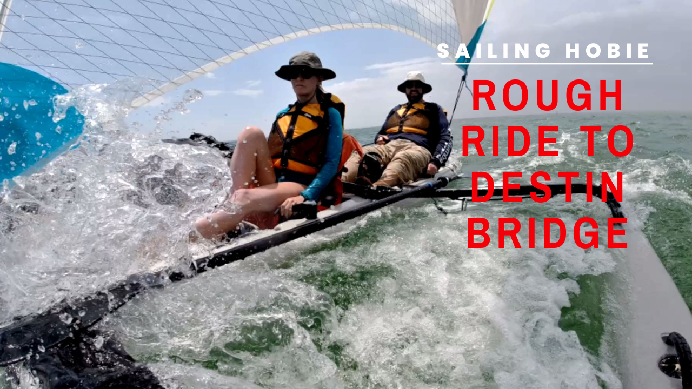
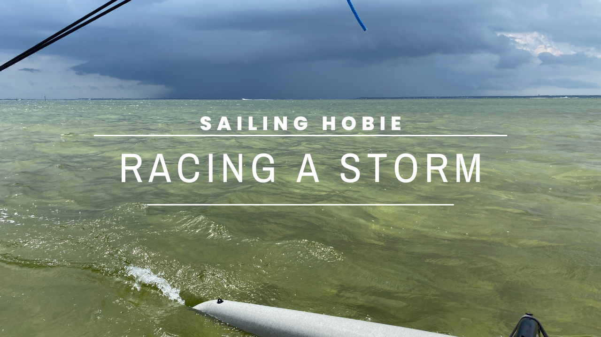
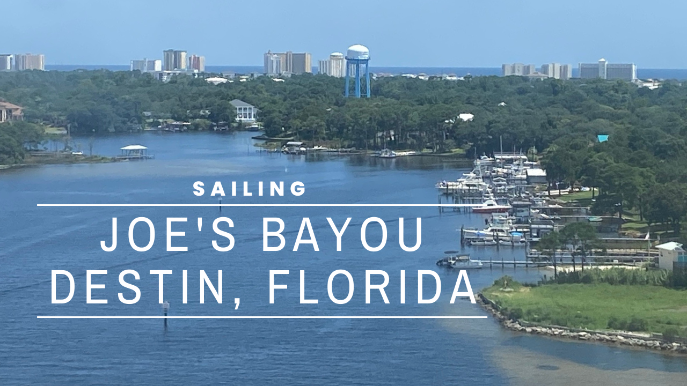
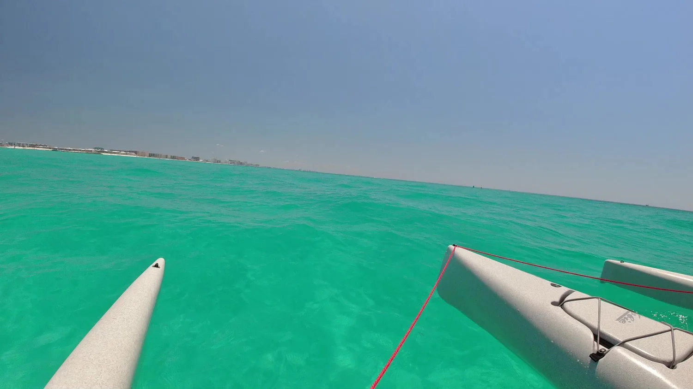
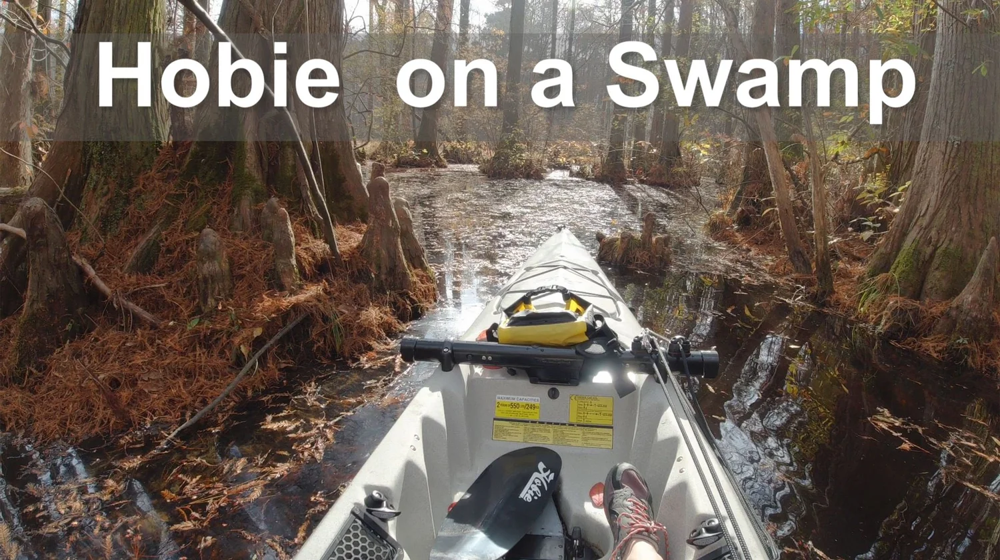
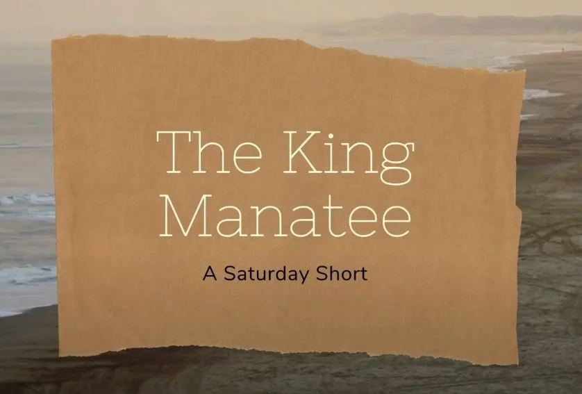
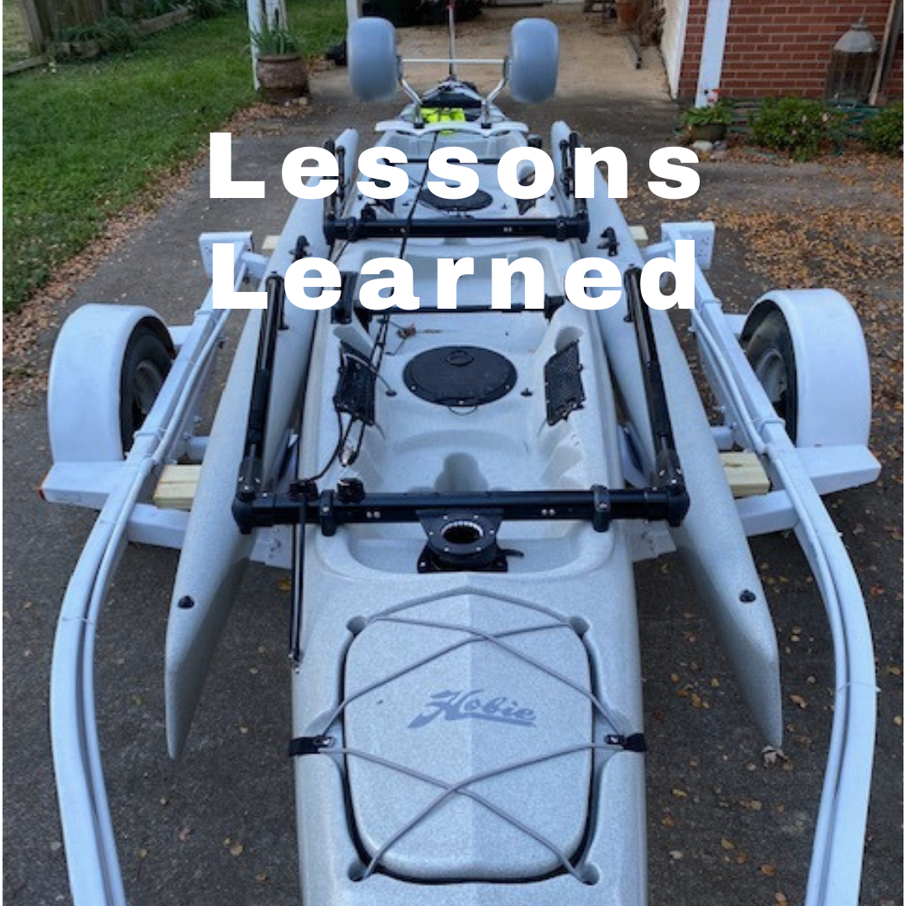
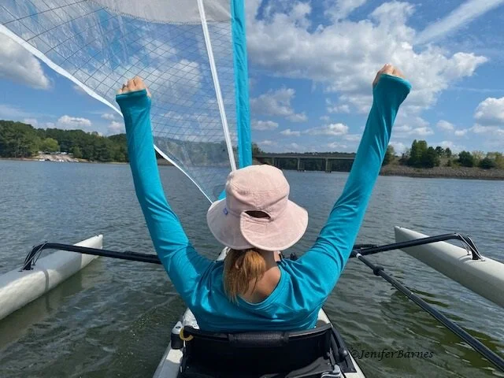

Sailing Hobie Tandem Island.
Our Hobie Mirage Tandem Island is a two-person kayak you can pedal, paddle, or sail as a trimaran. Here's where it has taken us.

You're going to get WET!
A fast, rough sail on Choctawhatchee Bay toward the Destin Bridge.
Read more →
Sailing around Destin Harbor
In and out of Destin Harbor in a low-riding kayak sailboat: a bit of a scary ride!
Read more →
Weather Can Change Quickly
A calm sail on Choctawhatchee Bay turns into a race against a storm.
Read more →
RELAX
An early-morning, glassy-calm tour of Joe's Bayou and Choctawhatchee Bay.
Read more →
Sailing Our Hobie TI Kayak around Joe's Bayou and Choctawhatchee Bay in Destin, Florida!
Two weeks of sailing in Destin begins: launching from Joe's Bayou.
Read more →
Sailing the Emerald Waters of Destin, Florida
Highlights from two weeks in Destin, plus stingrays that jump!
Read more →
Is Our Boat Too BIG?
Squeezing an 18-foot kayak-sailboat through a cypress swamp.
Read more →
The King Manatee
A Saturday Short: an unscripted, comical clip from Lake Jordan.
Read more →
We got a new trailer!
A blown tire, a tow truck that never came, and an upgrade.
Read more →
First Sail on Our Hobie Mirage Tandem Island
Maiden voyage on our Hobie Mirage Tandem Island.
Read more →